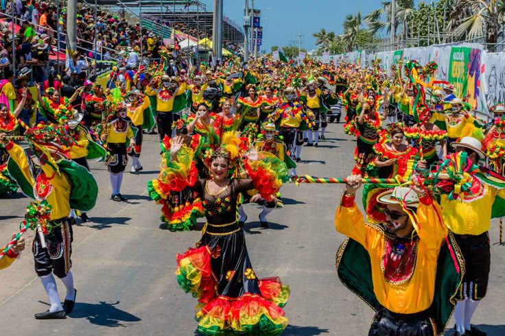
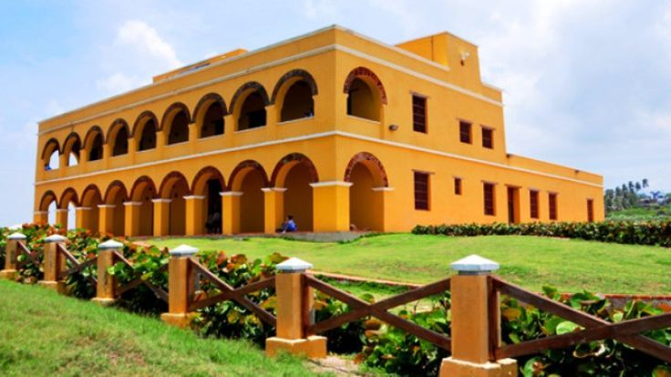
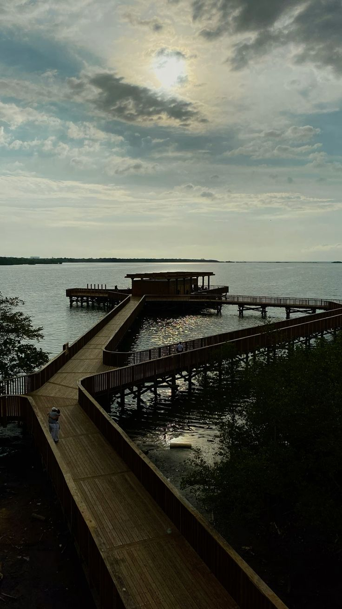
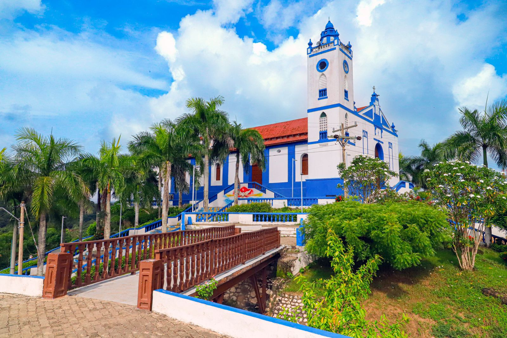
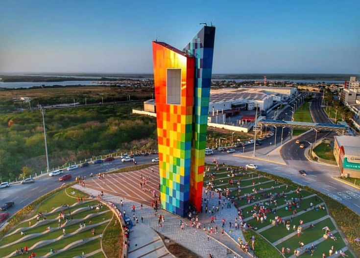

Descubre el Atlántico
El Atlántico es un departamento lleno de vida, cultura y tradición, reconocido por el Carnaval de Barranquilla, una de las fiestas más importantes de Colombia. Con playas, gastronomía y un ambiente caribeño inigualable, es un destino turístico ideal para quienes buscan diversión y experiencias únicas.
En A&G TOURS contamos con transporte especial para visitantes que deseen recorrer Barranquilla, Puerto Colombia y el Malecón del Río. Nuestros servicios incluyen traslados empresariales, recorridos turísticos y planes familiares, siempre con la seguridad y puntualidad que nos caracterizan.
Si buscas turismo en el Atlántico, somos tu mejor opción. Te llevamos a descubrir la alegría del Caribe colombiano con comodidad, calidad y confianza.
Carnaval de Barranquilla
El Carnaval de Barranquilla es la fiesta cultural más importante de Colombia y Patrimonio Oral e Inmaterial de la Humanidad. Sus desfiles, danzas y música caribeña hacen de este evento una experiencia inolvidable.
Gran Malecón del Río
El Gran Malecón del Río es un espacio moderno donde se disfruta de gastronomía, cultura y paisajes únicos a orillas del río Magdalena.
Castillo de Salgar
Construido en el siglo XIX, el Castillo de Salgar es un ícono histórico frente al mar, ideal para apreciar atardeceres.
Faro de Puerto Colombia
El Faro de Puerto Colombia es un monumento emblemático que durante años guió a las embarcaciones que llegaban al muelle más importante del Caribe colombiano. Hoy es un atractivo turístico que conserva la memoria histórica del municipio y ofrece una vista espectacular hacia el mar Caribe.
Ciénaga de Mallorquín
La Ciénaga de Mallorquín es un ecosistema único donde se puede realizar avistamiento de aves, ecoturismo y recorridos en kayak.
Muelle de Puerto Colombia (1888)
El histórico Muelle de Puerto Colombia, inaugurado en 1888, fue una de las principales puertas de entrada al país. Hoy es un símbolo turístico renovado frente al mar Caribe.
Santuario Mariano de Usiacurí
El Santuario Mariano es un lugar de peregrinación católica, famoso por su arquitectura y el ambiente espiritual que lo rodea.
Tubará y sus playas escondidas
Tubará ofrece playas tranquilas y menos concurridas que son perfectas para quienes buscan naturaleza y descanso.
La Ventana al Mundo
La Ventana al Mundo es un colorido monumento de 47 metros de altura que se ha convertido en un símbolo de modernidad y desarrollo para Barranquilla. Representa la apertura de la ciudad hacia el mundo y es un lugar perfecto para fotografías y recorridos turísticos.
Estadio Metropolitano Roberto Meléndez
El Estadio Metropolitano es la casa de la Selección Colombia y uno de los escenarios deportivos más emblemáticos del país.
¡Contáctanos!